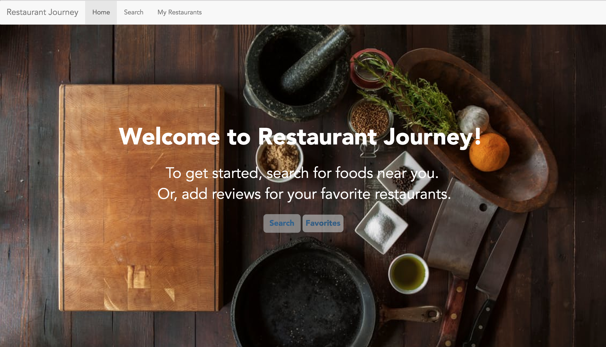

<< Back to Portfolio
Restaurant Journey
Restaurant Journey is a website I created for my class. As an extreme foodie, I wanted to create a website that allow other foodies to identify restaurants nearby. Using a Yelp API, a user can look for restaurants nearby, such as donuts near their current location. Users can also input reviews for restaurants they have already been to, keeping a log of their Restaurant Journey.
